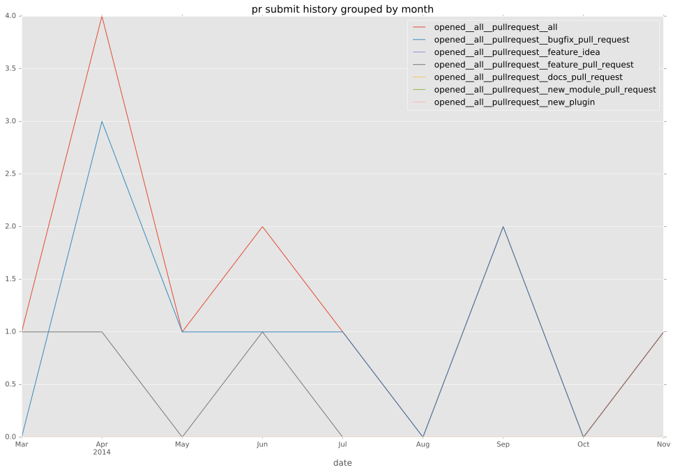
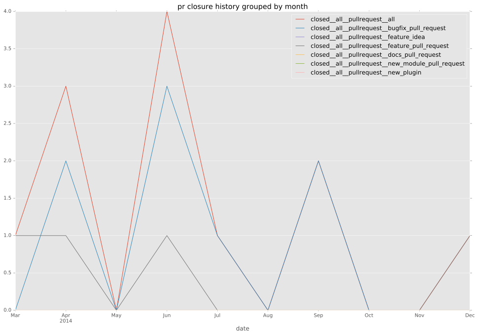

total issue counts
feature pull request: 3
pullrequest: 13
bugfix pull request: 10
feature idea: 2
issue: 5
bug report: 3
issue history
pullrequest history


days open by issue type
bugfix pull request
count: 16
std: 22.7416651399
min: 0
max: 77
median: 1.0
mean: 10.875
all
count: 23
std: 19.2320960321
min: 0
max: 77
median: 1.0
mean: 8.65217391304
pullrequest
count: 0
std: nan
min: nan
max: nan
median: nan
mean: nan
feature pull request
count: 4
std: 1.8929694486
min: 1
max: 5
median: 1.5
mean: 2.25
feature idea
count: 0
std: nan
min: nan
max: nan
median: nan
mean: nan
issue
count: 0
std: nan
min: nan
max: nan
median: nan
mean: nan
bug report
count: 3
std: 6.80685928555
min: 0
max: 13
median: 3.0
mean: 5.33333333333
closures grouped by total days open